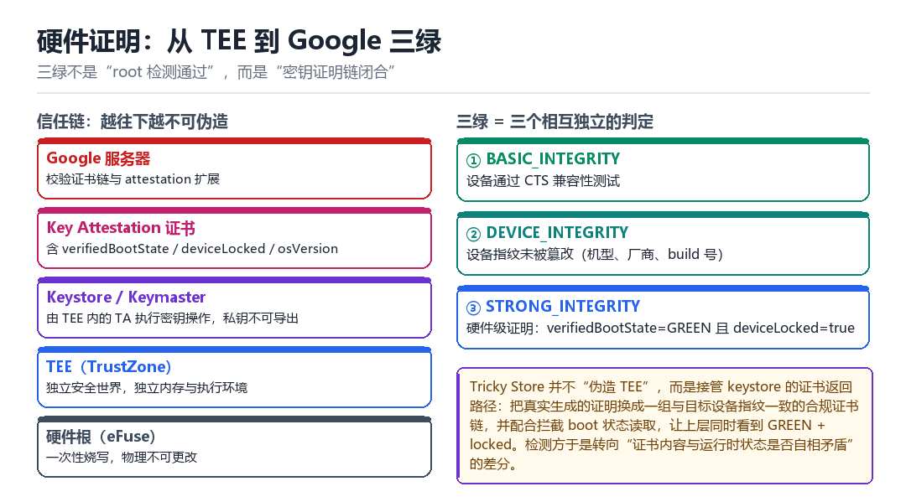

Android 硬件证明
从 TEE 开始到 Google 三绿
这一章讲的是“无法伪造的东西”，以及当它被绕过时，检测方靠什么翻盘。
3.1 TEE：手机里的第二个世界
ARM 的 TrustZone 把 CPU 分成两个世界：普通世界（Normal World，跑 Android）和安全世界（Secure World，跑 TEE OS）。两边有独立的内存与外设访问权限，普通世界读不到安全世界的内存。
手机上常见的 TEE 实现有 Qualcomm 的 QSEE、Google 的 Trusty。密钥运算、DRM、指纹比对，都在里面完成。这就带来一个性质：只要私钥在 TEE 里生成且从不出 TEE，那么“签名”这件事本身就证明了“请求来自这台设备”。

3.2 Key Attestation：把“设备状态”签进证书
Android 7 之后，Keystore 支持 attestation：应用可以请求生成一个密钥对，并让 TEE 给公钥签发一张证书。这张证书里除了公钥，还塞进了一段扩展数据，记录设备当时的状态：
| 字段 | 含义 | 为什么重要 |
|---|---|---|
| verifiedBootState | GREEN / YELLOW / ORANGE / RED | 直接反映 boot 是否被改 |
| deviceLocked | bootloader 是否锁定 | 解锁即失守 |
| osVersion | 系统版本（asn.1 tag 705） | 防止降级绕过 |
| osPatchLevel | 安全补丁级别（tag 706） | 判断是否已知漏洞版本 |
| verifiedBootKey | 根信任的公钥摘要 | 识别自定义签名 |
| verifiedBootHash | vbmeta 摘要（Android 12+） | 识别“镜像被换过” |
因为这段数据是 TEE 签的，普通世界改不了。想伪造，就必须让 TEE 说假话，或者让上层看到假的证书——这就是两条不同的攻击路线。
3.3 Google 三绿到底是什么
Play Integrity 把“设备可信”拆成三层，后一层包含前一层，可以逐级通过：
- MEETS_BASIC_INTEGRITY：基本完整性。判定的是“这台设备没有被明显篡改”——系统分区没被改、没有可疑的 root 或注入痕迹、运行环境自洽。它不要求设备通过 CTS，也不要求是 Google 认证机型，所以大量国产 ROM、模拟器改过的设备也能过。
- MEETS_DEVICE_INTEGRITY：设备完整性。要求 = 基本完整性 ＋ 设备通过 Android 兼容性（即 GMS/CTS 认证机型、指纹合法）。这一档才真正卡“机型是否被伪造”。
- MEETS_STRONG_INTEGRITY：硬件级证明。要求
verifiedBootState=GREEN且deviceLocked=true，证书链能追到 Google 的根，且在支持的设备上还要校验verifiedBootHash。
| 档位 | 最低要求 | 解锁 bootloader 还能拿到吗 |
|---|---|---|
| BASIC | 无明显篡改，不要求 CTS | 通常可以 |
| DEVICE | 基本完整性 + CTS/GMS 认证 | 通常可以（指纹仍合法） |
| STRONG | 硬件证明 + 已锁 + GREEN | 不行（必然掉档） |
很多人以为三绿是“root 检测通过”，其实不是。三绿衡量的是证明链是否闭合。一个完全没 root 但解锁了 bootloader 的设备，一样拿不到 STRONG。
3.4 Tricky Store 的定位：接管证书返回路径
Tricky Store 的思路很清晰：既然难点在“TEE 不肯说假话”，那就不去动 TEE，而是在证书返回给上层的路上把它换掉。真实生成的证明被替换成一组预先准备、与目标设备指纹完全一致的合规证书链；同时配合拦截 boot 状态的读取，让上层同时看到 GREEN 与 locked。
- 拦截点通常在 Keystore 服务的 Binder 调用返回处，或者在应用侧读取证书链的 API 上。
- 证书链必须“自洽”：设备型号、序列号、签发时间、扩展字段，任何一处对不上就会被交叉校验抓出来。
- 魔改版本的核心工作，往往是维护一个足够大的、覆盖多机型多版本的证书库，并处理有效期与吊销。
3.5 检测方怎么翻盘：从“看结果”转向“看一致性”
既然结果可以被替换，检测就转向“关系”：证书里的信息，和运行时能观察到的信息，是否互相矛盾。
| 交叉校验项 | 矛盾的表现 |
|---|---|
| 证书里的型号 vs Build.MODEL | 一个是 Pixel 8，一个是 Redmi |
| osPatchLevel vs 实际安全补丁 | 证书里的补丁级别比系统还新 |
| 证书签发时间 vs 设备首次开机时间 | 证书比设备还老 |
| verifiedBootHash vs 实际 vbmeta 摘要 | GREEN 但哈希对不上 |
| attestation 调用耗时分布 | 替换路径通常比真实 TEE 快一个数量级 |
| 多应用同时请求的一致性 | 两次请求返回不同的序列号 |
伪造单个字段容易，伪造一整套互相自洽的事实很难。
3.6 本章自测
- TEE 的两个世界分别叫什么？为什么普通世界读不到 TEE 内存？
- Key Attestation 证书里哪五个字段最关键？
- 一个未 root 但解锁 bootloader 的设备，三绿能拿到几个？
- 如果让你设计检测，除了证书内容，你还会查什么？
3.12 三绿转发：把“证明请求”送出去做
“三绿转发”要单独讲，因为它解决的是另一类问题：设备本身不具备通过条件，但可以让一台“干净的设备”替它完成证明。
思路拆开看只有三步：拦截请求 → 转发给真机 → 把结果原样带回。难点全在“原样”两个字上。
| 环节 | 要做的事 | 难点 |
|---|---|---|
| 拦截 | 在 attestation 调用处截获 challenge 与密钥参数 | 要区分“谁在请求” |
| 转发 | 把请求送到一台能通过的真机（或可信服务） | 通道要稳、要有认证 |
| 回传 | 把证书链塞回调用方，并保持字段自洽 | challenge 必须对应、时间要新鲜 |
3.13 为什么“原样带回”这么难
- challenge 必须一一对应：检测方每次传一个新随机数，回传的证书里必须包含它。拿旧证书复用会立刻失效。
- 时间戳要新鲜：证书的签发时间与请求时间差太多，会被判为“重放”。
- 密钥要匹配：回传的公钥必须与调用方本地持有的私钥对应，否则后续签名验证不过。
- 设备指纹要一致：证书里写的机型/序列号，必须与本地能观察到的信息不矛盾（见 3.5 节的交叉校验）。
所以“转发”方案的工程重心不在“能不能转”，而在“每次转回来的东西是否都自洽”。这也是为什么它比“本地替换证书”更复杂：本地替换只需要一份证书库，转发要维护一条实时链路 + 一致性校验。
3.14 检测方怎么看转发
| 信号 | 异常表现 |
|---|---|
| 往返时延 | 明显高于本地 TEE 的固定开销 |
| 时间分布 | 时延方差大（受网络影响） |
| 离线可用性 | 断网时 attestation 直接失败 |
| 并发一致性 | 多个 App 同时请求，返回的 uniqueId 出现重复 |
| 证书序列 | 多台设备拿到同一段序列号区间 |
3.15 三条路线的对比
| 路线 | 原理 | 优点 | 致命弱点 |
|---|---|---|---|
| 让 TEE 说谎 | 攻破安全世界 | 最彻底 | 难度极高 |
| 本地替换证书 | 接管返回路径 | 离线可用、时延低 | 证书库要自洽、难维护 |
| 三绿转发 | 借一台干净设备 | 无需自建证书库 | 必须联网、时延可测 |
三条路线没有“最优”，只有“哪种约束你能接受”。这也是全书反复强调的一句话：先想清楚对手在测什么，再决定用哪条路。
3.7 深入：证书里还藏着什么
除了前面列的五个字段，attestation 证书的应用层扩展里还有一批“看起来无关、实际很有用”的信息。检测方经常拿它们做交叉校验，因为伪造者往往只关注最显眼的那几个。
| 字段 | 含义 | 伪造者常忽略 |
|---|---|---|
| attestationVersion | 证明格式版本 | 版本与系统不匹配 |
| keymasterVersion | Keymaster 实现版本 | 与设备代际不符 |
| attestationSecurityLevel | 该密钥的保护级别 | 声称 TEE 但实际软件 |
| keymasterSecurityLevel | Keymaster 所在环境 | 同上 |
| uniqueId | 设备唯一标识（部分实现） | 多设备共用同一值 |
| creationDateTime | 密钥创建时间 | 早于设备出厂 |
3.8 两种攻击路线的本质差别
| 路线 | 做法 | 能骗过 | 骗不过 |
|---|---|---|---|
| 让 TEE 说谎 | 利用 TEE 漏洞改写判定 | 全部本地检查 | 服务端行为分析 |
| 替换返回结果 | hook 证书返回路径 | 本地检查与自校验 | 耗时分布、跨应用一致性 |
第一条路极其困难（要攻破安全世界），第二条路现实得多，但它的破绽是“太完美”——真实 TEE 的调用有固定开销，替换路径往往快得不像话。
3.16 一个可操作的交叉校验设计
cert = request_attestation() # 拿证书
facts = collect_local_facts() # 收集本机事实
checks = [
cert.model == facts.model,
cert.patchLevel >= facts.build_patch,
cert.boot_state == 'GREEN',
cert.device_locked,
abs(cert.latency - BASELINE_TEE_LATENCY) < TOLERANCE,
cert.unique_id != last_seen_id,
]
verdict = all(checks)3.9 原理推演：为什么“硬件证明”在理论上不可伪造
硬件证明的安全性建立在三个假设上：私钥不可导出、TEE 代码不可篡改、证书链可追溯。只要这三个假设成立，攻击者就无法凭空造出一份“来自这台设备”的证明。
| 假设 | 破坏方式 | 现实难度 |
|---|---|---|
| 私钥不可导出 | TEE 侧信道 / 故障注入 | 极高 |
| TEE 不可篡改 | bootloader 漏洞 | 高 |
| 证书链可追溯 | 泄露的厂商密钥 | 中（历史上有过） |
于是攻击者的现实选择就变成了第四条路：不去伪造证明，而是伪造“读取证明的那段代码看到的返回值”。这就是第 3.4 节讲的路线，也是所有“三绿方案”的共同基础。
3.10 数据细节：证书里那些数字
看一份真实的 attestation 证书（用 openssl x509 -text 解），会发现扩展里是一段 ASN.1 编码的 KeyDescription。它的结构大致是：
KeyDescription ::= SEQUENCE {
attestationVersion INTEGER,
attestationSecurityLevel SecurityLevel,
keymasterVersion INTEGER,
keymasterSecurityLevel SecurityLevel,
attestationChallenge OCTET_STRING,
uniqueId OCTET_STRING,
softwareEnforced AuthorizationList,
teeEnforced AuthorizationList
}关键点：`attestationChallenge` 必须与你请求时传入的随机数一致。这是防重放的核心——如果检测方每次都传一个新随机数，那么“拿一份旧证书重复使用”立刻失效。
3.11 工程权衡：三绿的三种取舍
| 目标 | 手段 | 代价 |
|---|---|---|
| 只要 BASIC | 不动 | 很多功能受限 |
| 要 DEVICE | 改指纹 + 隐藏 root | 维护成本中 |
| 要 STRONG | 证书替换 + 状态拦截 | 维护成本高，易失效 |
把一次证明请求按成慢动作
App 弹出一个「验证设备」的转圈，你点下确认。几百毫秒后，一张证书被生成、被打包、被送去远端服务器，服务器回了一句「这台设备可信」。这几白毫秒里，普通世界忙得团团转，却始终没碰到最关键的那把私钥。把这段数据按成慢动作，你会看到一条清晰的界线：能被读到的都能被伪造，不能被读到的才叫证明。
手机里其实有两个世界。ARM 的 TrustZone 把 CPU 切成普通世界（跑 Android）和安全世界（跑 TEE OS），两边的内存与外设访问权限相互隔离。密钥在这里面生成、在这里面签名，私钥从出生到销毁都没离开过 TEE。所以「签名」这件事本身，就成了「请求确实来自这台设备、状态确实被硬件读过」的证据。
跟着一张证书被造出来
- App 调 Keystore → 对
KeyGenParameterSpec→ 带上一个服务器下发的 nonce，请求生成带证明的密钥对 → 结果：请求经 Binder 落到 keystore 服务，再转成一次 TEE 调用。 - TEE 生成密钥对 → 对安全世界内部的密钥槽 → 用硬件真随机源造出公私钥，私钥打上「永不可导出」标记 → 结果：公钥可以出来，私钥这辈子都出不来。
- TEE 收集设备状态 → 对 boot 状态、锁状态、系统版本、补丁级别、vbmeta 摘要 → 逐项读进安全世界 → 结果：一组「当时的硬件事实」被攒齐，普通世界插不上手。
- TEE 签发证书 → 对公钥＋这组状态＋那个 nonce → 用出厂时烧进 TEE 的 attestation 私钥签名，拼成一条证书链 → 结果：一张任何字段被改一个比特就会验签失败的证书。
- 证书回到普通世界 → 对 App → 沿 Binder 返回完整证书链 → 结果：App 拿到了全文，却改不动其中任何一个字段。
第 3 步是关键：状态不是 App 自己报的，是 TEE 去读的。所以绕过的两条路从一开始就分道扬镳——要么想办法让 TEE 读错（要攻破安全世界，极难），要么在证书返回的路上把它换掉（现实得多，但会留下别的不一致）。
服务器那一侧又做了什么
- 验链 → 对证书链 → 从叶子一路验签名到 Google 的根证书 → 结果：链断了就整包拒掉，不看内容。
- 对 nonce → 对扩展里的 nonce 与本次请求下发的随机串 → 逐字节比 → 结果：防止把上一次的证明重放进来。
- 读扩展字段 → 对
verifiedBootState、deviceLocked、osPatchLevel等 → 逐项判定三绿档位 → 结果：STRONG 要求 GREEN 且已锁，解锁设备必然掉到 BASIC。 - 交叉校验 → 对证书里的型号、耗时分布、跨应用一致性 → 与运行时事实对照 → 结果：字段全对但关系矛盾，一样判为可疑——这是替换证书路线最难补的一环。
动手：把证书里的扩展字段挖出来
adb pull /sdcard/attest.pem attest.pem # App 导出的证书链
openssl x509 -in attest.pem -text -noout # 看扩展 OID 1.3.6.1.4.1.11129.2.1.17
openssl asn1parse -in attest.pem -inform PEM # 逐层看 ASN.1 结构里的 tag 705/706
openssl verify -CAfile google-root.pem attest.pem # 验链是否追到信任根成功的标准是三条同时成立：openssl verify 回 OK、扩展里能翻出 verifiedBootState、且 nonce 与本次请求一致。失败时先看是哪一条断：verify 失败说明证书链被换过或根不对；扩展里字段齐全却与 getprop 读到的型号、补丁级别对不上，说明是「替换返回结果」而非真证明；asn1parse 里找不到 705/706 这两个 tag，多半是用了老版本格式，别误判成伪造。
| 证书里的一段 | 由谁写入 | 普通世界能改吗 |
|---|---|---|
| 公钥 | TEE 硬件随机生成 | 能读到，不能替换（会破坏签名） |
| verifiedBootState | TEE 读启动链状态 | 不能，改了验签失败 |
| osVersion / osPatchLevel | TEE 读系统属性 | 不能，同上 |
| nonce | App 传入、TEE 抄进证书 | 能传，但改不了已签的那份 |
| 整条证书链 | TEE 签发后返回 | 能在返回路径上整包替换 |
把「TEE 只读不改、证书可整包替换」这组对立记牢。第 04 章会接着讲检测方怎么从「看结果」转向「看一致性」——既然单张证书能被换，就把证书里的型号、补丁、耗时拿去和运行时事实逐项对；第 01 章里那句「改了 boot 就丢 STRONG」，到这里才闭环：verifiedBootState 正是被 TEE 签进这张证书的那一项。